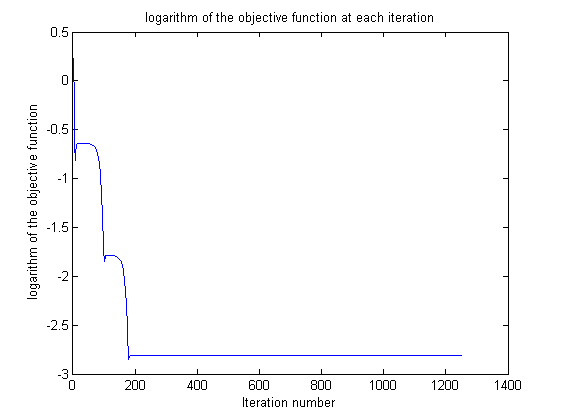

CS 736: Assignment 2: Question 1 (Diffusion Tensor Magnetic Resonance Imaging)
Praveen Agrawal 12D020030
Aditya Kumar Akash 120050046
Contents
Part a
g = [1,0; 0.866,0.5; 0.5, 0.866; 0,1; -0.5,0.866; -0.866,0.5];
S = [0.5045-0.0217i; 0.6874+0.0171i; 0.3632+0.1789i; 0.3483+0.1385i; 0.2606-0.0675i; 0.2407 + 0.1517i];
S0 = 1;
b0 = 0.1;
a = 1; b = 1; c = 1;
L = [a, 0;b, c];
gradient = [0;0;0];
lambda = 0.1;
fSequence = [];
d11Sequence = [];
d12Sequence = [];
d21Sequence = [];
d22Sequence = [];
while(lambda~= 0)
resultOld = [a;b;c];
fOld = 0;
for i = 1:1:size(g,1)
gradient(1) = gradient(1) + 2*(abs(S(i))-S0*exp(-b0*g(i,:)*(L*L')*g(i,:)'))*(-S0*exp(-b0*g(i,:)*(L*L')*g(i,:)'))*(-b0*(2*g(i,1)^2*a + 2*g(i,1)*g(i,2)*b));
gradient(2) = gradient(2) + 2*(abs(S(i))-S0*exp(-b0*g(i,:)*(L*L')*g(i,:)'))*(-S0*exp(-b0*g(i,:)*(L*L')*g(i,:)'))*(-b0*(2*g(i,1)*g(i,2)*a + 2*g(i,2)^2*b));
gradient(3) = gradient(3) + 2*(abs(S(i))-S0*exp(-b0*g(i,:)*(L*L')*g(i,:)'))*(-S0*exp(-b0*g(i,:)*(L*L')*g(i,:)'))*(-b0*(2*g(i,2)^2*c));
fOld = fOld + (abs(S(i))-S0*exp(-b0*g(i,:)*(L*L')*g(i,:)'))^2;
end
resultNew = resultOld - lambda * gradient;
a = resultNew(1);
b = resultNew(2);
c = resultNew(3);
L = [a, 0;b, c];
fNew = 0;
for i = 1:1:size(g,1)
fNew = fNew + (abs(S(i))-S0*exp(-b0*g(i,:)*(L*L')*g(i,:)'))^2;
end
fSequence = horzcat(fSequence, log(fNew));
D = L*L';
d11Sequence = horzcat(d11Sequence, D(1,1));
d12Sequence = horzcat(d12Sequence, D(1,2));
d21Sequence = horzcat(d21Sequence, D(2,1));
d22Sequence = horzcat(d22Sequence, D(2,2));
if(fNew<fOld)
lambda = lambda*1.1;
else
lambda = 0.5*lambda;
end
end
figure;
plot(fSequence);
title('logarithm of the objective function at each iteration');
xlabel('Iteration number');
ylabel('logarithm of the objective function');
figure;
plot(d11Sequence);
title('D(1,1)');
xlabel('Iteration number');
ylabel('D(1,1)');
figure;
plot(d12Sequence);
title('D(1,2)');
xlabel('Iteration number');
ylabel('D(1,2)');
figure;
plot(d21Sequence);
title('D(2,1)');
xlabel('Iteration number');
ylabel('D(2,1)');
figure;
plot(d22Sequence);
title('D(2,2)');
xlabel('Iteration number');
ylabel('D(2,2)');
disp('matrix D obtained is');
disp(D);
disp('Clearly as D is a symmetric matrix we can see that the plots of D(1,2) and D(2,1) are identical');
matrix D obtained is
5.7382 -6.0979
-6.0979 17.2112
Clearly as D is a symmetric matrix we can see that the plots of D(1,2) and D(2,1) are identical

Part b
a = 1; b = 1;
gOld = [a;b];
gradient = [0;0];
lambda = 0.1;
while(lambda~= 0)
gOld = [a;b];
gradient(1) = -(S0*exp(-b0*gOld'*D*gOld))*(2*D(1,1)*a + 2*D(1,2)*b);
gradient(2) = -(S0*exp(-b0*gOld'*D*gOld))*(2*D(1,2)*a + 2*D(2,2)*b);
SOld = S0*exp(-b0*gOld'*D*gOld);
gNew = gOld + lambda * gradient;
gNew = gNew/norm(gNew);
a = gNew(1);
b = gNew(2);
SNew = S0*exp(-b0*gNew'*D*gNew);
if(SNew>SOld)
lambda = lambda*1.1;
else
lambda = 0.5*lambda;
end
end
Part c
disp('Principal direction is')
disp(gNew);
disp('Diffusion in the principal direction is')
Smax = S0*exp(-b0*gNew'*D*gNew);
disp(Smax);
gOrtho = [-gNew(2); gNew(1)];
disp('Vector orthogonal to the principal vector')
disp(gOrtho);
Sortho = S0*exp(-b0*gOrtho'*D*gOrtho);
disp('Diffusion in the orthogonal direction is');
disp(Sortho);
disp('Factor by which diffusion in the principal direction is more as compared to the diffusion in the direction orthogonal to it is');
disp(Smax/Sortho);
Principal direction is
0.9179
0.3967
Diffusion in the principal direction is
0.7333
Vector orthogonal to the principal vector
-0.3967
0.9179
Diffusion in the orthogonal direction is
0.1374
Factor by which diffusion in the principal direction is more as compared to the diffusion in the direction orthogonal to it is
5.3357